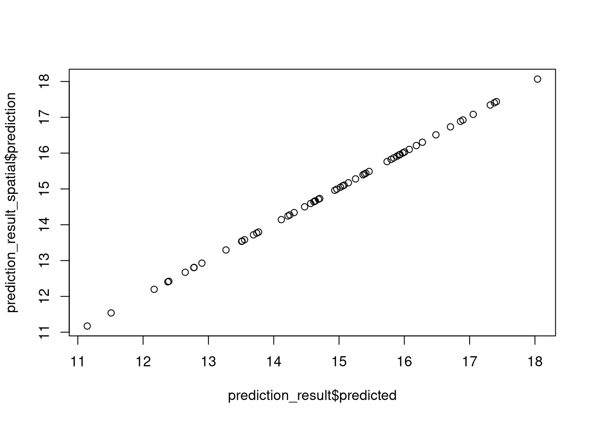
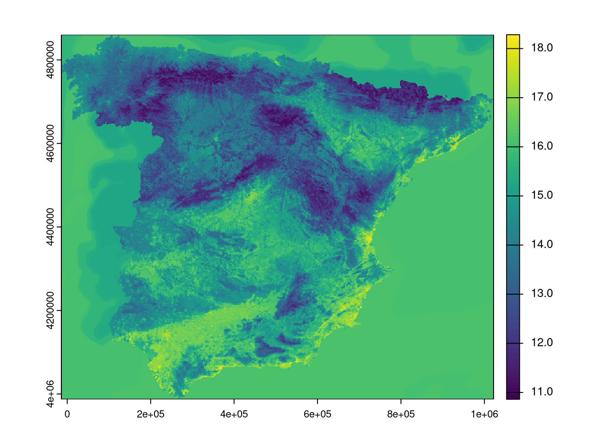
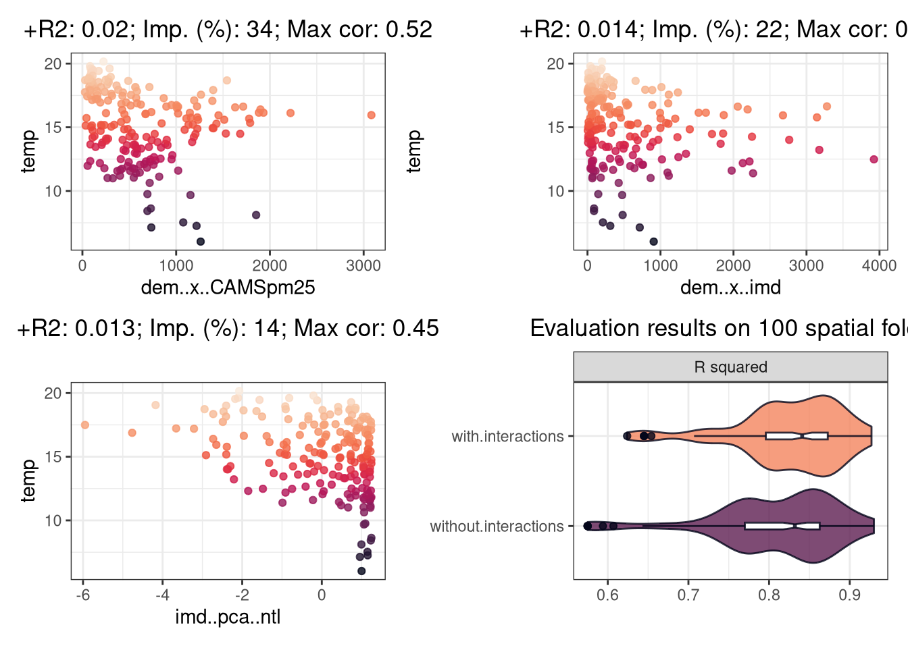
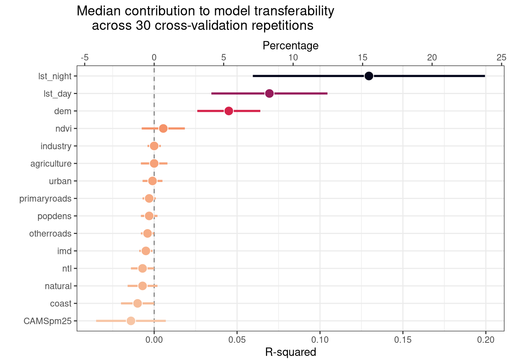
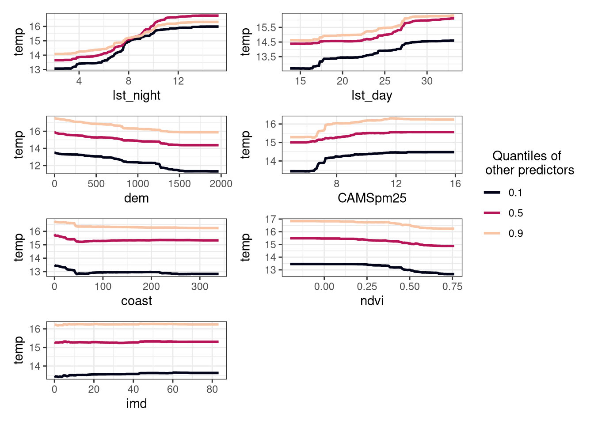
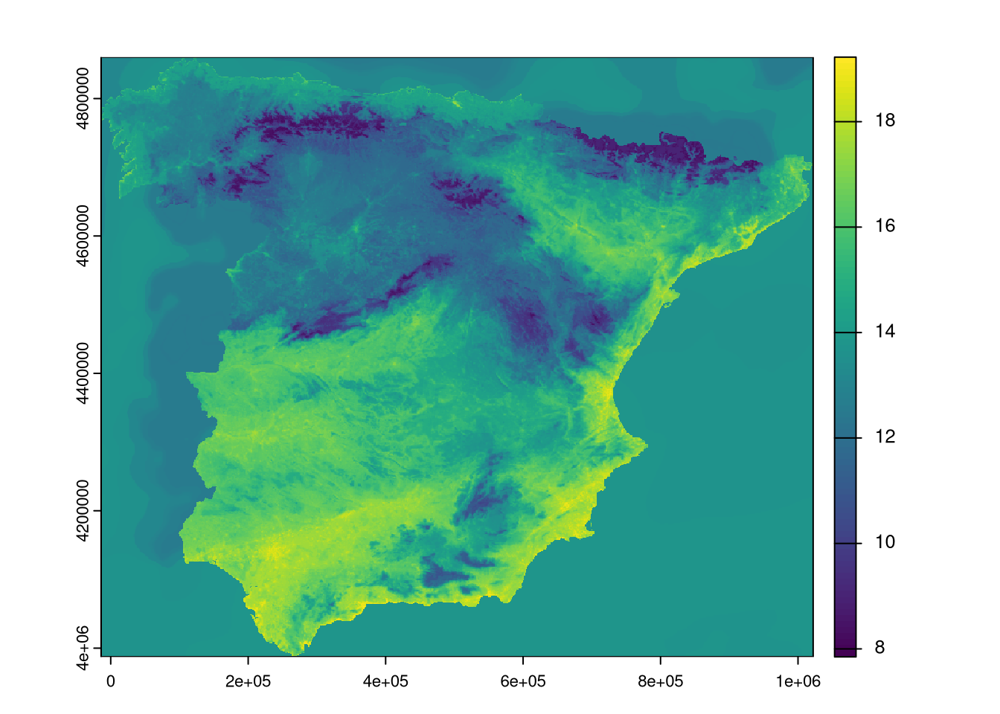
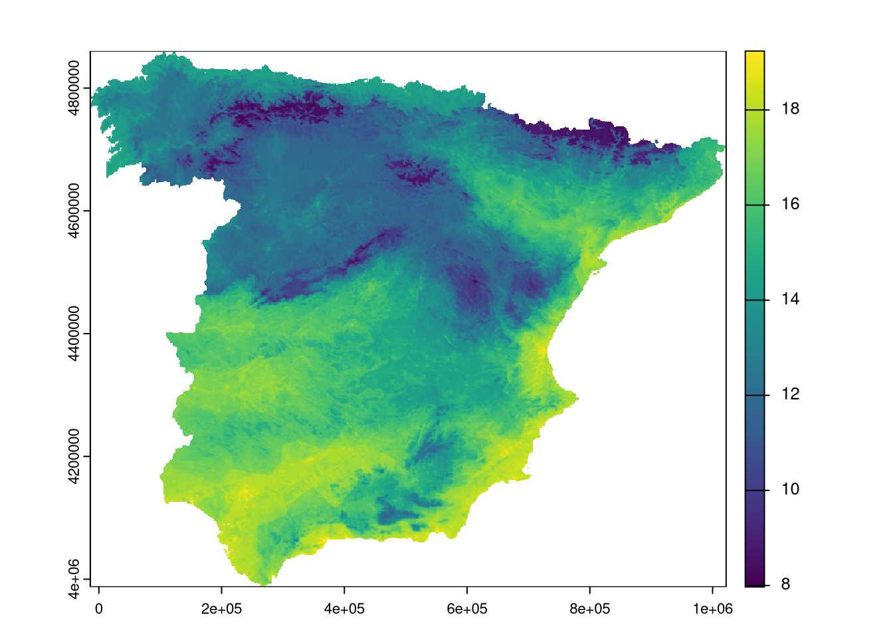

![]()
spain <- sf::read_sf(
"https://github.com/LOEK-RS/FOSSGIS2025-examples/raw/refs/heads/main/data/spain.gpkg"
)
covariates <- terra::rast(
"https://github.com/LOEK-RS/FOSSGIS2025-examples/raw/refs/heads/main/data/predictors.tif"
)
temperature <- sf::read_sf(
"https://github.com/LOEK-RS/FOSSGIS2025-examples/raw/refs/heads/main/data/temp_train.gpkg"
)
temperature <- terra::extract(covariates, temperature, bind = TRUE) |>
sf::st_as_sf()Specialized R packages for spatial machine learning: An introduction to RandomForestsGLS, spatialRF, and meteo
rstats
sml
This is the fifth part of a blog post series on spatial machine learning with R.
You can find the list of other blog posts in this series in part one.
This document provides an overview of three R packages, RandomForestsGLS, spatialRF, and meteo, that implement spatial machine learning methods, but are outside of standard machine learning frameworks like caret, tidymodels, or mlr3.
All of the examples below use the same dataset, which includes the temperature measurements in Spain, a set of covariates, and the spatial coordinates of the temperature measurements.
RandomForestsGLS
The RandomForestsGLS (https://doi.org/10.21105/joss.03780) package implements the Generalised Least Square (GLS) based Random Forest (RF-GLS) algorithm.1 This approach is designed for spatial data modeling as it accounts for spatial dependencies in the data by:
- Using a global dependency-adjusted split criterion and node representatives instead of the classification and regression tree (CART) criterion used in standard RF models
- Applying contrast resampling rather than the bootstrap method used in a standard RF model
- Employing residual kriging with covariance modeled using a Gaussian process framework
The package provides four functions:
RFGLS_estimate_spatial()for estimation in spatial dataRFGLS_predict()for prediction of the mean functionRFGLS_predict_spatial()for prediction of the spatial responseRFGLS_estimate_timeseries()for estimation in time series data (not discussed here)
The package has rather unintuitive syntax and requires the data to be in a specific format. We need to provide the coordinates of the data (a matrix), the response variable (a vector), and the covariates (a matrix). In the example below, I limited the covariate matrix to the variables that are not spatial proxies.
library(RandomForestsGLS)
coords <- sf::st_coordinates(temperature)
temp_response <- temperature$temp
temperature_df <- sf::st_drop_geometry(temperature)
covariate_names <- colnames(temperature_df)[2:(ncol(temperature_df) - 7)]
covariate_matrix <- as.matrix(temperature_df[, covariate_names])For the example, we also split the data into training and testing sets based on created random indices.
set.seed(2025 - 01 - 30)
train_idx <- sample(1:nrow(coords), floor(nrow(coords) * 0.7))The RFGLS_estimate_spatial() function is used to fit the RF-GLS model. Here, we customize the number of trees to 100, but the function has many other parameters that can be adjusted.
estimation_result <- RFGLS_estimate_spatial(
coords = coords[train_idx, ],
y = temp_response[train_idx],
X = covariate_matrix[train_idx, ],
ntree = 100
)
str(estimation_result)List of 7
$ P_matrix : int [1:136, 1:100] 18 78 88 123 31 80 49 67 65 98 ...
$ predicted_matrix: num [1:136, 1:100] 17 17 13 14.9 13 ...
$ predicted : num [1:136] 16 15.4 10.9 13.8 15 ...
$ X : num [1:136, 1:15] 727 20.7 0 203.7 0 ...
..- attr(*, "dimnames")=List of 2
.. ..$ : chr [1:136] "88" "106" "24" "11" ...
.. ..$ : chr [1:15] "popdens" "coast" "dem" "imd" ...
$ y : num [1:136] 16.13 15.21 7.53 13.61 15.59 ...
$ coords : num [1:136, 1:2] 495960 523533 273723 618599 616251 ...
..- attr(*, "dimnames")=List of 2
.. ..$ : NULL
.. ..$ : chr [1:2] "X" "Y"
$ RFGLS_object :List of 6
..$ ldaughter : int [1:273, 1:100] 2 4 6 8 0 10 12 0 14 0 ...
..$ rdaughter : int [1:273, 1:100] 3 5 7 9 0 11 13 0 15 0 ...
..$ nodestatus: int [1:273, 1:100] -3 -3 -3 -3 -1 -3 -3 -1 -3 -1 ...
..$ upper : num [1:273, 1:100] 27.029 0.216 76.038 0.287 0 ...
..$ avnode : num [1:273, 1:100] 0 0 0 0 15.3 ...
..$ mbest : int [1:273, 1:100] 14 10 2 8 0 2 8 0 2 0 ...The result is a list with seven elements: a matrix of zero-indexed resamples, a matrix of predictions (ntest x ntree), a vector of predicted values, the covariate matrix, the response variable, the coordinates matrix, and the RF-GLS object.
Now, we can use the fitted model to predict the mean function (RFGLS_predict()) or the spatial response (RFGLS_predict_spatial()). The difference (as far as I understand) is that the former returns the mean prediction, while the latter uses the spatial coordinates in addition to the covariates to predict the spatial response.
The first function returns a list with two elements: a matrix of predictions (ntest x ntree) and a vector of predicted values, while the second function returns a list with just one element: a vector of predicted values. Just note that the predictions by the RFGLS_predict() are named "predicted" and the predictions by the RFGLS_predict_spatial() are named "prediction".
prediction_result <- RFGLS_predict(
RFGLS_out = estimation_result,
Xtest = covariate_matrix[-train_idx, ]
)
prediction_result_spatial <- RFGLS_predict_spatial(
RFGLS_out = estimation_result,
coords.0 = coords[-train_idx, ],
Xtest = covariate_matrix[-train_idx, ]
)Warning in BRISC_estimation(coords, x = matrix(1, nrow(coords), 1), y = rfgls_residual, : The ordering of inputs x (covariates) and y (response) in BRISC_estimation has been changed BRISC 1.0.0 onwards.
Please check the new documentation with ?BRISC_estimation.plot(prediction_result$predicted, prediction_result_spatial$prediction)
The final results of these two approaches are v. similar, but not identical.
Now, let’s predict the models’ results on the whole dataset.
covariate_coords_r <- terra::crds(covariates)
covariate_matrix_r <- as.matrix(covariates)
covariate_matrix_r <- covariate_matrix_r[, covariate_names]
pred_s <- RFGLS_predict_spatial(
RFGLS_out = estimation_result,
coords.0 = covariate_coords_r,
Xtest = covariate_matrix_r
)Warning in BRISC_estimation(coords, x = matrix(1, nrow(coords), 1), y = rfgls_residual, : The ordering of inputs x (covariates) and y (response) in BRISC_estimation has been changed BRISC 1.0.0 onwards.
Please check the new documentation with ?BRISC_estimation.Warning in corr_pred$prediction + func_pred$predicted: longer object length is
not a multiple of shorter object lengthpred_r <- terra::setValues(covariates[[1]], pred_s$prediction)
names(pred_r) <- "prediction"
terra::plot(pred_r)
spatialRF
The spatialRF (https://blasbenito.github.io/spatialRF/) package’s aim is to provide a minimal code interface to fit spatial regression models with Random Forest. The internal calculations are based on three general methods to generate spatial predictors from the distance matrix of the data points: Distance matrix columns as explanatory variables (Hengl et al. 2018), Moran’s Eigenvector Maps (Dray, Legendre, and Peres-Neto 2006) and PCAs. The ranger package is used here internally to fit the Random Forest model.
This package also requires the data to be in a specific format. We need to provide the data as a data frame with the dependent variable, including spatial coordinates, and the distance matrix: a matrix with the distances among the records in the data frame.
library(spatialRF)
library(sf)
coordinates <- st_coordinates(temperature)
colnames(coordinates) <- c("x", "y")
coordinates <- as.data.frame(coordinates)
temperature_df <- st_drop_geometry(temperature)
temperature_df$x <- coordinates[, 1]
temperature_df$y <- coordinates[, 2]
distance_matrix <- as.matrix(dist(temperature_df[2:(ncol(temperature_df) - 9)]))We also need to define the dependent variable and the predictor variables.
response_name <- "temp"
covariate_names <- colnames(temperature_df)[2:(ncol(temperature_df) - 9)]Finally, we can fit the models using one of the methods provided by the package. The package has 10 methods implemented, nine of which are based on the three components:2
- The method to generate spatial predictors (
"hengl","mem", or"pca") - The method to rank spatial predictors (
"moran"or"effect") - The method to select spatial predictors (
"sequential"or"recursive")
The main function of this package is rf_spatial(), which fits the Random Forest model with spatial predictors. Here, an example using Moran’s Eigenvector Maps method to generate spatial predictors, Moran’s I to rank them, and sequential selection of the predictors is shown.
rf_spatial_moran <- rf_spatial(
data = temperature_df,
dependent.variable.name = response_name,
predictor.variable.names = covariate_names,
distance.matrix = distance_matrix,
distance.thresholds = 0,
method = "mem.moran.sequential",
n.cores = 1
)
rf_spatial_moranModel type
- Fitted with: ranger()
- Response variable: temp
Random forest parameters
- Type: Regression
- Number of trees: 500
- Sample size: 195
- Number of predictors: 15
- Mtry: 3
- Minimum node size: 5
Model performance
- R squared (oob): 0.887361
- R squared (cor(obs, pred)^2): 0.9844978
- Pseudo R squared (cor(obs, pred)):0.9922186
- RMSE (oob): 0.9476691
- RMSE: 0.4131
- Normalized RMSE: 0.103203
Model residuals
- Stats:
┌───────┬────────┬────────┬──────┬────────┬──────┐
│ Min. │ 1st Q. │ Median │ Mean │ 3rd Q. │ Max. │
├───────┼────────┼────────┼──────┼────────┼──────┤
│ -1.87 │ -0.24 │ 0.02 │ 0.00 │ 0.26 │ 1.53 │
└───────┴────────┴────────┴──────┴────────┴──────┘
- Normality:
- Shapiro-Wilks W: 0.971
- p-value : 4e-04
- Interpretation : Residuals are not normal
- Spatial autocorrelation:
┌──────────┬───────────┬─────────┬──────────────────┐
│ Distance │ Moran's I │ P value │ Interpretation │
├──────────┼───────────┼─────────┼──────────────────┤
│ 0.0 │ 0.005 │ 0.258 │ No spatial │
│ │ │ │ correlation │
└──────────┴───────────┴─────────┴──────────────────┘
Variable importance:
┌──────────────┬────────────┐
│ Variable │ Importance │
├──────────────┼────────────┤
│ lst_night │ 1.966 │
├──────────────┼────────────┤
│ lst_day │ 1.342 │
├──────────────┼────────────┤
│ dem │ 1.245 │
├──────────────┼────────────┤
│ CAMSpm25 │ 0.936 │
├──────────────┼────────────┤
│ coast │ 0.745 │
├──────────────┼────────────┤
│ ndvi │ 0.683 │
├──────────────┼────────────┤
│ imd │ 0.420 │
├──────────────┼────────────┤
│ ntl │ 0.401 │
├──────────────┼────────────┤
│ industry │ 0.291 │
├──────────────┼────────────┤
│ popdens │ 0.270 │
├──────────────┼────────────┤
│ urban │ 0.218 │
├──────────────┼────────────┤
│ natural │ 0.212 │
├──────────────┼────────────┤
│ agriculture │ 0.196 │
├──────────────┼────────────┤
│ otherroads │ 0.181 │
├──────────────┼────────────┤
│ primaryroads │ 0.095 │
└──────────────┴────────────┘The rf_spatial() returns a ranger model with several new slows, most importantly residuals that contain information about the residuals, and spatial that contains information about the selected spatial predictors and the method used to select them. Printing the model object provides a summary of the model, including its parameters, model performance, information on model residuals, and variable importance.
The spatialRF package also provides a set of additional functions. It includes a function for reducing multicollinearity in the predictors and removing redundant spatial predictors (filter_spatial_predictors()); or finding promising variable interactions (the_feature_engineer()):
interactions <- the_feature_engineer(
data = temperature_df,
dependent.variable.name = response_name,
predictor.variable.names = covariate_names,
xy = coordinates,
importance.threshold = 0.50, # uses 50% best predictors
cor.threshold = 0.60, # max corr between interactions and predictors
seed = 2025 - 01 - 30,
repetitions = 100,
verbose = TRUE
) ┌──────────────────┬──────────────────┬──────────────────┬──────────────────┐
│ Interaction │ Importance (% of │ R-squared │ Max cor with │
│ │ max) │ improvement │ predictors │
├──────────────────┼──────────────────┼──────────────────┼──────────────────┤
│ dem..x..CAMSpm25 │ 33.6 │ 0.020 │ 0.52 │
├──────────────────┼──────────────────┼──────────────────┼──────────────────┤
│ dem..x..imd │ 22.1 │ 0.014 │ 0.54 │
├──────────────────┼──────────────────┼──────────────────┼──────────────────┤
│ imd..pca..ntl │ 13.6 │ 0.013 │ 0.454 │
└──────────────────┴──────────────────┴──────────────────┴──────────────────┘
The rf_evaluate() function allows the evaluation of the model using spatial cross-validation.
rf_eval <- rf_evaluate(
model = rf_spatial_moran,
xy = coordinates,
repetitions = 30,
training.fraction = 0.75,
metrics = "rmse",
seed = 2025 - 01 - 30,
verbose = TRUE
)
Spatial evaluation
- Training fraction: 0.75
- Spatial folds: 30
Metric Median MAD Minimum Maximum
rmse 1.428 0.221 0.815 1.968rf_evalModel type
- Fitted with: ranger()
- Response variable: temp
Random forest parameters
- Type: Regression
- Number of trees: 500
- Sample size: 195
- Number of predictors: 15
- Mtry: 3
- Minimum node size: 5
Model performance
- R squared (oob): 0.887361
- R squared (cor(obs, pred)^2): 0.9844978
- Pseudo R squared (cor(obs, pred)):0.9922186
- RMSE (oob): 0.9476691
- RMSE: 0.4131
- Normalized RMSE: 0.103203
Model residuals
- Stats:
┌───────┬────────┬────────┬──────┬────────┬──────┐
│ Min. │ 1st Q. │ Median │ Mean │ 3rd Q. │ Max. │
├───────┼────────┼────────┼──────┼────────┼──────┤
│ -1.87 │ -0.24 │ 0.02 │ 0.00 │ 0.26 │ 1.53 │
└───────┴────────┴────────┴──────┴────────┴──────┘
- Normality:
- Shapiro-Wilks W: 0.971
- p-value : 4e-04
- Interpretation : Residuals are not normal
- Spatial autocorrelation:
┌──────────┬───────────┬─────────┬──────────────────┐
│ Distance │ Moran's I │ P value │ Interpretation │
├──────────┼───────────┼─────────┼──────────────────┤
│ 0.0 │ 0.005 │ 0.258 │ No spatial │
│ │ │ │ correlation │
└──────────┴───────────┴─────────┴──────────────────┘
Variable importance:
┌──────────────┬────────────┐
│ Variable │ Importance │
├──────────────┼────────────┤
│ lst_night │ 1.966 │
├──────────────┼────────────┤
│ lst_day │ 1.342 │
├──────────────┼────────────┤
│ dem │ 1.245 │
├──────────────┼────────────┤
│ CAMSpm25 │ 0.936 │
├──────────────┼────────────┤
│ coast │ 0.745 │
├──────────────┼────────────┤
│ ndvi │ 0.683 │
├──────────────┼────────────┤
│ imd │ 0.420 │
├──────────────┼────────────┤
│ ntl │ 0.401 │
├──────────────┼────────────┤
│ industry │ 0.291 │
├──────────────┼────────────┤
│ popdens │ 0.270 │
├──────────────┼────────────┤
│ urban │ 0.218 │
├──────────────┼────────────┤
│ natural │ 0.212 │
├──────────────┼────────────┤
│ agriculture │ 0.196 │
├──────────────┼────────────┤
│ otherroads │ 0.181 │
├──────────────┼────────────┤
│ primaryroads │ 0.095 │
└──────────────┴────────────┘
Spatial evaluation
- Training fraction: 0.75
- Spatial folds: 30
Metric Median MAD Minimum Maximum
rmse 1.428 0.221 0.815 1.968The rf_importance() function allows for visualizing the variable importance of the model.
rf_imp <- rf_importance(
rf_spatial_moran,
xy = coordinates
)
rf_impModel type
- Fitted with: ranger()
- Response variable: temp
Random forest parameters
- Type: Regression
- Number of trees: 500
- Sample size: 195
- Number of predictors: 15
- Mtry: 3
- Minimum node size: 5
Model performance
- R squared (oob): 0.887361
- R squared (cor(obs, pred)^2): 0.9844978
- Pseudo R squared (cor(obs, pred)):0.9922186
- RMSE (oob): 0.9476691
- RMSE: 0.4131
- Normalized RMSE: 0.103203
Model residuals
- Stats:
┌───────┬────────┬────────┬──────┬────────┬──────┐
│ Min. │ 1st Q. │ Median │ Mean │ 3rd Q. │ Max. │
├───────┼────────┼────────┼──────┼────────┼──────┤
│ -1.87 │ -0.24 │ 0.02 │ 0.00 │ 0.26 │ 1.53 │
└───────┴────────┴────────┴──────┴────────┴──────┘
- Normality:
- Shapiro-Wilks W: 0.971
- p-value : 4e-04
- Interpretation : Residuals are not normal
- Spatial autocorrelation:
┌──────────┬───────────┬─────────┬──────────────────┐
│ Distance │ Moran's I │ P value │ Interpretation │
├──────────┼───────────┼─────────┼──────────────────┤
│ 0.0 │ 0.005 │ 0.258 │ No spatial │
│ │ │ │ correlation │
└──────────┴───────────┴─────────┴──────────────────┘
Variable importance:
┌────────────┬────────────┬─────────┬───────┬──────┬─────┐
│ Variable │ Importance │ │ │ │ │
├────────────┼────────────┼─────────┼───────┼──────┼─────┤
│ lst_night │ 1.966 │ 0.13 │ 0.07 │ 15.5 │ 8.4 │
├────────────┼────────────┼─────────┼───────┼──────┼─────┤
│ lst_day │ 1.342 │ 0.0695 │ 0.035 │ 8.3 │ 4.2 │
├────────────┼────────────┼─────────┼───────┼──────┼─────┤
│ dem │ 1.245 │ 0.045 │ 0.019 │ 5.4 │ 2.3 │
├────────────┼────────────┼─────────┼───────┼──────┼─────┤
│ CAMSpm25 │ 0.936 │ -0.014 │ 0.021 │ -1.7 │ 2.5 │
├────────────┼────────────┼─────────┼───────┼──────┼─────┤
│ coast │ 0.745 │ -0.01 │ 0.01 │ -1.2 │ 1.1 │
├────────────┼────────────┼─────────┼───────┼──────┼─────┤
│ ndvi │ 0.683 │ 0.0055 │ 0.013 │ 0.7 │ 1.5 │
├────────────┼────────────┼─────────┼───────┼──────┼─────┤
│ imd │ 0.420 │ -0.005 │ 0.004 │ -0.6 │ 0.5 │
├────────────┼────────────┼─────────┼───────┼──────┼─────┤
│ ntl │ 0.401 │ -0.007 │ 0.007 │ -0.8 │ 0.8 │
├────────────┼────────────┼─────────┼───────┼──────┼─────┤
│ industry │ 0.291 │ 0 │ 0.004 │ 0 │ 0.4 │
├────────────┼────────────┼─────────┼───────┼──────┼─────┤
│ popdens │ 0.270 │ -0.003 │ 0.005 │ -0.4 │ 0.6 │
├────────────┼────────────┼─────────┼───────┼──────┼─────┤
│ urban │ 0.218 │ -0.001 │ 0.006 │ -0.1 │ 0.7 │
├────────────┼────────────┼─────────┼───────┼──────┼─────┤
│ natural │ 0.212 │ -0.007 │ 0.009 │ -0.8 │ 1.1 │
├────────────┼────────────┼─────────┼───────┼──────┼─────┤
│ agricultur │ 0.196 │ 0 │ 0.008 │ 0 │ 1 │
│ e │ │ │ │ │ │
├────────────┼────────────┼─────────┼───────┼──────┼─────┤
│ otherroads │ 0.181 │ -0.004 │ 0.004 │ -0.5 │ 0.5 │
├────────────┼────────────┼─────────┼───────┼──────┼─────┤
│ primaryroa │ 0.095 │ -0.003 │ 0.004 │ -0.4 │ 0.5 │
│ ds │ │ │ │ │ │
└────────────┴────────────┴─────────┴───────┴──────┴─────┘
Spatial evaluation
- Training fraction: 0.75
- Spatial folds: 30
Metric Median MAD Minimum Maximum
r.squared 0.838 0.073 0.591 0.924The mem() function generates Moran Eigenvector Maps (MEM) from a distance matrix.3
mem1 <- mem(distance.matrix = distance_matrix)The package also contains a set of custom plot functions. One example is the plot_response_curves() function, which allows for the visualization of the response curves of the model.
plot_response_curves(rf_spatial_moran)
Additional interesting functions allow for tuning the model parameters (rf_tuning()) or comparing several models (rf_compare()). A complete list of this package’s functions is available at https://blasbenito.github.io/spatialRF/reference/index.html.
The final prediction can be made using the predict() function from the terra package.
pred_srf <- terra::predict(covariates, rf_spatial_moran)
terra::plot(pred_srf[[1]])
meteo
Random Forest Spatial Interpolation (RFSI, Sekulić et al. (2020) doi:10.3390/rs12101687) is implemented in the meteo package. RFSI enhances traditional Random Forest by explicitly incorporating spatial autocorrelation through additional covariates. These covariates include (1) observations from the nn nearest locations and (2) their respective distances to the target location. Predictions follow the same principle, using the nearest observed values and distances to improve spatial accuracy.
library(meteo)This package allows to directly work with spatial R objects. First, we need to define our formula.
response_name <- "temp"
covariate_names <- colnames(temperature)[2:(ncol(temperature) - 8)]
fo <- as.formula(paste(
response_name,
"~",
paste(covariate_names, collapse = " + ")
))Next, we use the main function in this package, rfsi(), to fit the RFSI model. The function requires the formula, the data, and the number of nearest observations used in the model. Additional arguments can be set, including the number of CPUs to use, the progress bar, and arguments passed to the ranger function, such as seed, num.trees, and mtry.
rfsi_model <- rfsi(
formula = fo,
data = temperature,
n.obs = 5, # number of nearest observations
cpus = parallel::detectCores() - 1,
progress = FALSE,
importance = "impurity",
seed = 42,
num.trees = 250,
mtry = 5
)
rfsi_modelRanger result
Call:
ranger(formula, data = data.df, ...)
Type: Regression
Number of trees: 250
Sample size: 195
Number of independent variables: 25
Mtry: 5
Target node size: 5
Variable importance mode: impurity
Splitrule: variance
OOB prediction error (MSE): 0.9585029
R squared (OOB): 0.8797822 The outcome of this function is a standard ranger object.
Another function, cv.rfsi(), allows for spatial (leave-location-out) cross-validation of the RFSI model. It requires the formula, the data, the tuning grid, the type of cross-validation, the number of folds, and few other arguments. The tgrid argument is a data frame with the tuning parameters to be tested that may include mtry, num.trees, n.obs, and sample.fraction. Here, we will only tune the mtry parameter.
rfsi_model_cv <- cv.rfsi(
formula = fo,
data = temperature,
tgrid = expand.grid(mtry = 3:22),
tune.type = "LLO", # Leave-Location-Out CV
k = 5, # number of folds
seed = 42,
acc.metric = "RMSE", # R2, CCC, MAE
output.format = "sf", # "data.frame", # "SpatVector",
cpus = parallel::detectCores() - 1,
progress = FALSE,
importance = "impurity"
) # ranger parameter
rfsi_model_cvSimple feature collection with 195 features and 4 fields
Attribute-geometry relationships: constant (4)
Geometry type: POINT
Dimension: XY
Bounding box: xmin: 35545.98 ymin: 3988816 xmax: 978546 ymax: 4858816
Projected CRS: ED50 / UTM zone 30N
First 10 features:
staid out.folds obs pred geometry
1 10 1 15.619167 15.647846 POINT (978546 4655816)
2 15 1 13.456851 14.526646 POINT (547546 4784816)
3 16 1 14.185000 14.624209 POINT (539546 4802816)
4 17 1 14.306761 14.877302 POINT (498546 4802816)
5 24 1 7.530117 10.470688 POINT (273546 4762816)
6 31 1 14.017564 14.943647 POINT (46545.98 4761816)
7 32 1 14.717808 14.402137 POINT (38545.98 4713816)
8 41 1 12.313699 12.306969 POINT (543546 4624816)
9 43 1 8.626575 8.745711 POINT (460546 4560816)
10 45 1 11.190560 11.511932 POINT (489546 4645816)acc.metric.fun(rfsi_model_cv$obs, rfsi_model_cv$pred, "RMSE")[1] 0.8828286The result is an object of the desired output format (here, a sf object) with the observed and predicted values. The acc.metric.fun() function can be then use to calculate the accuracy metric (here, RMSE) between the observed and predicted values.
Finally, we can use the pred.rfsi() function to predict the model on new data, with a selected output format (here, SpatRaster).
# Prediction on new data
rfsi_prediction <- pred.rfsi(
model = rfsi_model,
data = temperature,
obs.col = "temp",
newdata = covariates,
output.format = "SpatRaster", # "sf", # "SpatVector"
cpus = parallel::detectCores() - 1,
progress = FALSE
)
terra::plot(rfsi_prediction)
This blog post was originally written as a supplement to the poster “An Inventory of Spatial Machine Learning Packages in R” presented at the FOSSGIS 2025 conference in Muenster, Germany. The poster is available at https://doi.org/10.5281/zenodo.15088973.
Footnotes
Quoting the authors “RF-GLS extends RF in the same way generalized least squares (GLS) fundamentally extends ordinary least squares (OLS) to accommodate for dependence in linear models.”↩︎
See
?rf_spatialfor more details. Also, the 10th method is"hengl"directly following the approach by Hengl et al. (2018).↩︎mem_multithreshold()function allows for generating MEMs for multiple distance thresholds.↩︎
Reuse
Citation
BibTeX citation:
@online{nowosad,
author = {Nowosad, Jakub},
title = {Specialized {R} Packages for Spatial Machine Learning: {An}
Introduction to {RandomForestsGLS,} {spatialRF,} and Meteo},
url = {https://geocompx.org/post/2025/sml-bp5/},
langid = {en}
}
For attribution, please cite this work as:
Nowosad, Jakub. n.d. “Specialized R Packages for Spatial Machine
Learning: An Introduction to RandomForestsGLS, spatialRF, and
Meteo.” https://geocompx.org/post/2025/sml-bp5/.